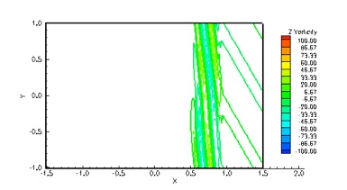

Two-Dimensional Euler Equations
The long-term convection of an isentropic vortex is studied. The flow is simulated using the 5th order CRWENO and WENO schemes and 3rd order TVD-RK3 time-stepping. The initial vortex is convected through a distance of 1000 core radii over a periodic domain. The CRWENO scheme shows a much better capability at preserving the vortex shape and strength, compared to the WENO scheme of the same order. A comparison of the minimum pressure history and the cross-sectional pressure variation shows the improved performance of the CRWENO scheme (the schemes “NonCompact5”, “Compact5” and “Compact5-LD” refer to the underlying linear schemes with constant optimal weights without WENO limiting). The numbers in the parentheses in the legend indicate the computational runtimes. It is observed that the CRWENO5 schemes yield solutions on a 60x60 grid that are comparable to the WENO5 solution on a 90x90 grid, while having lower numerical cost.
Density contours of an isentropic vortex: Initial, and 5th order WENO and CRWENO after convecting 1000 core radii
Isentropic Vortex Convection
The CRWENO schemes is applied the two-dimensional Euler equations on Cartesian, equi-spaced meshes. The convection of an isentropic vortex over a large distance is studied to demonstrate the ability of the scheme to preserve flow features for long durations. The double Mach reflection and the shock-vorticity wave interactions problems are solved to validate the schemes for problems with discontinuities. The sound generation from the shock - vortex interaction is studied to verify the schemes and compare its performance with the WENO schemes.
Double Mach Reflection

CRWENO5
WENO5
Shock - Vortex Interaction

Shock - Vorticity Wave Interaction


The double Mach reflection problem involves the reflection of a Mach 10 shock from an inviscid wall. The CRWENO5 scheme is compared with the WENO5 scheme for this problem. The problem set-up can be found here and here. The flow is solved on a 480 x 120 grid with TVD-RK3 time-stepping. The density contours agree well with published results. The CRWENO5 scheme shows an improved resolution of the contact discontinuity roll-up at the base of the Mach stem, as seen from the entropy contours.
The interaction of a shock wave with a vorticity wave results in the generation of fast-moving acoustic and slow-moving entropy and vorticity waves. The problem is a 2D representation of shock-turbulence interactions. The CRWENO5 schemes are applied to this problem to verify their performance.
Contact: ghosh (at) mcs (dot) anl (dot) gov

The interaction of a convecting vortex with a normal shock results in the generation of sound waves. A strong interaction is characterized by the generation of sound waves due to the interaction of the vortex with the primary shock, as well as the interaction with secondary and tertiary shock structures that are formed as a result of the primary interaction.
Additional sound waves are generated due to the convection of a distorted vortex. The solutions obtained by the CRWENO5 scheme is verified against previous computational results and a good agreement is seen.
The figures on the left-hand side show the sound pressure as a function of the radial distance from the vortex center at non-dimensional times of 16, 20 and 34. While 3 sound waves are visible at t = 16, there are 7 sound waves at t = 34. The figure below shows the azimuthal variation of the 3 sound waves at t = 16 and the quadrupolar nature is visible. Successive sound waves are out of phase with each other.
These figures show the sound pressure contours at non-dimensional times of 16, 20 and 34. The initial three sound waves are generated as a result of interactions of the vortex with shock structures. Additional sound waves are generated due to the convection of a distorted vortex.